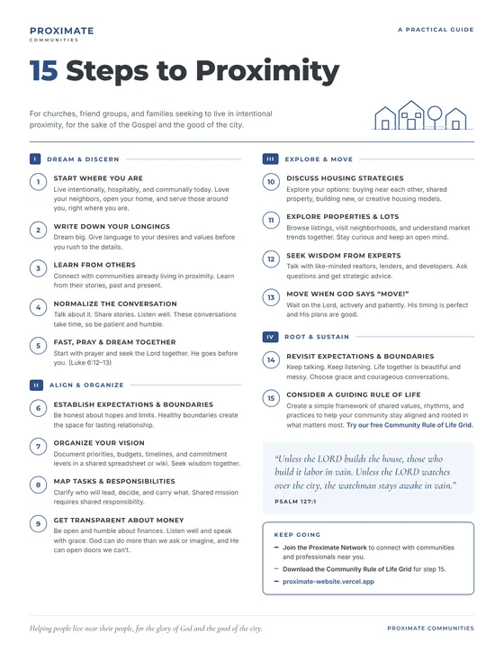

15 Steps to Proximity
A practical one-page guide for churches, friend groups, and families seeking to live in intentional proximity, from first conversations to putting down roots together.

What's inside
- Dream & Discern (steps 1–5): start where you are, name your longings, learn from others, and pray together
- Align & Organize (steps 6–9): set expectations, organize your vision, share responsibilities, and talk honestly about money
- Explore & Move (steps 10–13): weigh housing strategies, explore properties, and seek wise counsel
- Root & Sustain (steps 14–15): keep the conversation going and adopt a shared rule of life
- Letter-size PDF, easy to print and share with your group